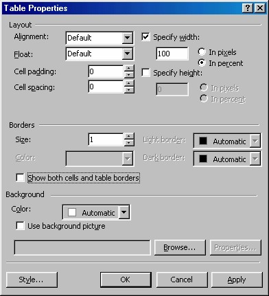
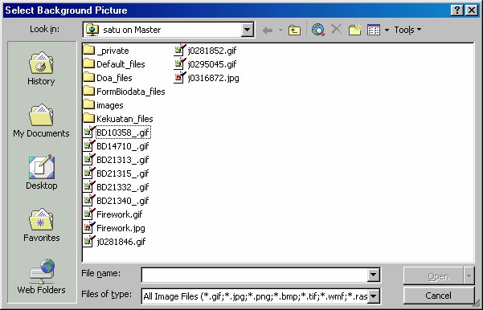
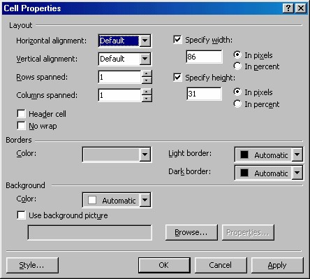

2 Mengatur properti
Setelah tebal terbentuk, selanjutnya kita bisa mengatur propertinya, termasuk
properti sel, yang merupakan unsur terkecil tabel.
2.1 Properti tabel
Untuk mengatur properti tabel Anda, klik kanan pada tabel lalu aktifkan Table _
Table Properties. Kotak dialog Table Properties akan muncul (Gambar 9.12).

Gambar 9.12 Kotak dialog Table Properties
Berikut adalah pengaturan yang dapat Anda lakukan:
• Alignment, di sini Anda dapat menentukan bagaimana tabel tersebut
dijajarkan dalam sebuah halaman. Jika Anda membiarkan pengaturan
Default-nya, maka tabel tersebut akan ditempatkan pada dokumen tersebut
tanpa mengubah posisinya - tabel itu akan ditempatkan di sisi kiri dari
window. Jika Anda menggunakan salah satu pengaturan lainnya, FrontPage
akan menggunakan tag <div> untuk menjajarkan tabel tersebut. Tag<div>
ini relatif baru dan berfungsi mirip dengan tag paragraf <p>, hanya saja tag
tersebut tidak menambahkan sebuah baris kosong sesudahnya. Hal ini
mungkin saja tidak disengaja, karena terdapat atribut penjajaran yang dapat
digunakan di dalam tag <table>; dan konsekwensinya adalah Anda tidak
dapat mengelilingi tabel itu dengan teks. (Lihat "Membuat Teks
Mengelilingi Tabel " pada bagian lain bab ini). Anda dapat menjajarkan
tabel tersebut ke sebelah kanan, di tengah, atau di sebelah kiri dengan
pengaturan-pengaturan ini.
• Float, kotak pilihan untuk menentukan posisi tabel. Tersedia Default, Left
dan Right.
• Specify width, isikan lebar tabel pada kotak isian ini. Lalu tentukan apakah
dalam satuan piksel (pilihan In pixels) atau sebagai persentase ukuran tabel
(In percent).
• Cell Padding Adalah jarak dari isi sel ke garis tepi sel. Lalu tentukan
apakah dalam satuan piksel (pilihan In pixels ) atau sebagai persentase
ukuran tabel (In percent).
• Cell Spacing Ini adalah jarak antara sel dengan sel di sebelahnya di dalam
tabel. Lalu tentukan apakah dalam satuan piksel (pilihan In pixels ) atau
sebagai persentase ukuran tabel (In percent).
Jika Anda menggunakan border, aturlah nilai Cell Spacing menjadi 0 agar garis tabel
antar sel-sel menjadi solid.
Anda dapat menggunakan cara yang sama untuk membuat kotak di sekeliling teks;
buat saja sebuah tabel dengan sel tunggal, lalu terapkan nilai cell-spacing sehingga
Anda bisa menghasilkan border eksternal tanpa border internal.
• Borders - kotak pilihan Size. Biarkan pilihan ini pada nilai 0 maka tabel
tidak akan menampilkan border.
• Borders – kotak cek Show both cells and table borders. Untuk
menampilkan atau menghilangkan garis batas sel dan tabel sekaligus.
• Background Anda dapat menggunakan warna latar (pilihan Color) atau
gambar latar belakang (Use background picture ) dengan kotak dialog
Select background picture.

Gambar 9.13 Kotak dialog Select background picture
Setelah melakukan pengaturan pada kotak dialog Table Properties, Anda bisa
mencoba pengaturan tersebut tanpa harus menutup kotak dialog, yaitu dengan
menekan tombol Apply. Kalau hasilnya masih kurang memuaskan Anda bisa
meneruskan pengaturan. Sebaliknya jika Anda telah puas dan ingin menerapkannya,
klik OK. Kotak dialog Table Properties akan ditutup.
2.2 Mengatur properti sel
Anda dapat memodifikasi kolom-kolom tertentu pada sel, caranya dengan
menggunakan kotak dialog Cell Properties. Untuk membuka kotak dialog tersebut
ada dua cara, yaitu:
• Klik kanan di dalam tabel tersebut dan pilih Cell Properties.
• atau klik tabel itu dan pilih perintah Table ® Properties.
Kotak dialog Cell Properties akan muncul (Lihat Gambar 9.14).

Gambar 9.14 Kotak dialog Cell Properties
Berikut ini keterangan ietm-item di dalam kotak dialog:
• Kotak pilihan Horizontal Alignment. Secara default, setiap isi sel akan diratakiri-
kan (Align left). Anda dapat mengubah perataan, menjadi ratatengah
(center) atau ratakanan (Align right). Setelah Anda mengaktifkan kotak cek
Specify width, sebuah kotak isian juga akan aktif, tuliskan lebar tabel yang
Anda inginkan pada kotak isian tersebut. Lalu tentukan satuan yang
digunakan, apakah dalam piksel (In pixels) atau sebagai persentase ukuran
tabel (In percent).
• Kotak pilihan Vertical Alignment. Secara default, isi sel tersebut akan
berada di tengah secara vertikal; Anda dapat mengubahnya ke atas atau ke
bawah. Kalau Anda klik kotak cek Specify width, maka kotak isiannya akan
aktif dan Anda bisa mengisikan lebar tabel pada kotak isian ini. Lalu
tentukan satuan yang digunakan, apakah dalam piksel (In pixels) atau
sebagai persentase ukuran tabel (In percent).
• Kotak pilihan Rows spanned. Untuk memodifikasi rentang baris atau
menggabungkan satu baris ke beberapa baris berikutnya. Kalau Anda klik
kotak cek Specify width, maka kotak isiannya akan aktif dan Anda bisa
mengisikan lebar tabel pada kotak isian ini. Lalu tentukan satuan yang
digunakan, apakah dalam piksel (In pixels) atau sebagai persentase ukuran
tabel (In percent).
• Kotak pilihan Columns spanned. Pada kotak pilihan ini Anda dapat
memodifikasi rentang kolom atau menggabungkan satu kolom ke beberapa
kolom berikutnya. Kalau Anda klik kotak cek Specify width, maka kotak
isiannya akan aktif dan Anda bisa mengisikan lebar tabel pada kotak isian
ini. Lalu tentukan satuan yang digunakan, apakah dalam piksel (In pixels )
atau sebagai persentase ukuran tabel (In percent).
• Kotak cek Header Cell. Jika Anda memilih kotak cek ini, sel tersebut akan
menjadi sebuah header yaitu teks di dalam sel akan ditebalkan. (Sel-sel ini
dihasilkan oleh tag HTML khusus, <th>).
• Kotak cek No Wrap. Teks pada sel biasanya akan dipenggal jika
ruangannya tidak cukup. Aktifkan kotak cek ini agar tidak dipenggal.
• Kelompok Background. Anda dapat menggunakan warna latar untuk table
dengan menentukan warnanya pada kotak pilihan Color. Kalau Anda ingin
menggunakan gambar sebagai latar belakang, klik kotak cek Use
background picture lalu tuliskan nama file gambar dan teampat
menyimpannya pada kotak isian yang tersedia. Jika Anda tidak yakin, Anda
bisa mencari gambar dengan kotak dialog background picture , yang
muncul ketika Anda klik tombol Browse.
Setelah melakukan pengaturan pada kotak dialog Cell Properties, Anda bisa
mencoba pengaturan tersebut tanpa harus menutup kotak dialog, yaitu dengan
menekan tombol Apply. Kalau hasilnya masih kurang memuaskan, Anda bisa
meneruskan pengaturan. Sebaliknya jika Anda telah puas dan ingin menerapkannya
ke sel, klik tombol OK. Kotak dialog Cell Properties akan ditutup.
Anda bisa melakukan pengaturan beberapa sel sekaligus, caranya dengan memilih
beberapa sel tersebut sekaligus lalu membuka kotak dialog Cell Properties ini dan
melakukan pengaturan.
Anda dapat menggabungkan beberapa sel, dengan cara:
1. Pilihlah beberapa sel atau pilihlah sebuah baris (Table è Select Row) atau
pilihlah seluruh kolom (Table èSelect Column).
2. Kemudian aktifkan Table èMerge Cells.
Hati-hati pada saat menggunakan pengaturan Cell Span dan Minimum Width.
Kedua pengaturan tersebut seringkali memberikan hasil yang tidak dapat
diperkirakan, jadi Anda harus mencoba-coba dulu hasilnya dengan Apply. Dan
Anda harus lebih berhati-hati untuk tidak memasukkan nilai rentang melebihi jumlah
sel pada baris atau kolom.
Setelah melakukan pengaturan dan menutup kotak dialog Cell Properties, ternyata
pengaturan yang Anda lakukan tidak sesuai dan Anda ingin kembali ke kondisi
semula, bagaimana caranya? Aktifkan EditèUndo.
Copyright © Herlan Lesmana
Created with the Freeware Edition of HelpNDoc: Free CHM Help documentation generator